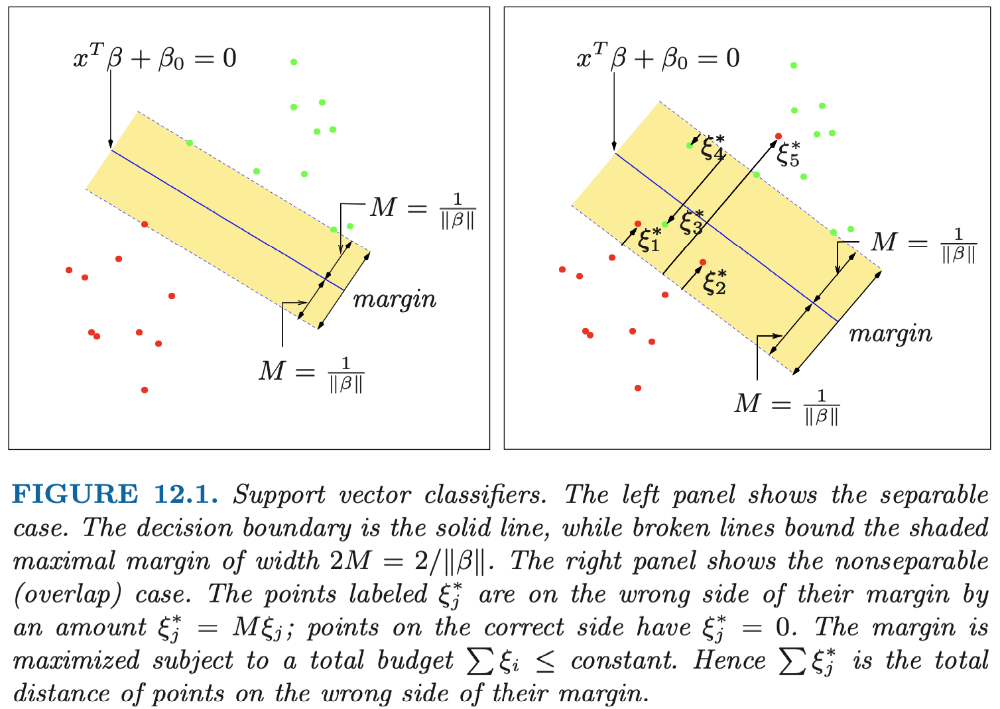

ESL 12: Support Vector Machines and Flexibile Discriminants
12.1 Introduction
当两个类 线性可分 时，我们可以用 Linear Discriminant Analysis 找到它们的最优分界面。当它们不是线性可分，相互重叠时，我们可以在 更高维的特征空间 中构造 线性 分界面。这种方法叫做支持向量机（support vector machine）。它是 LDA 的一个扩展。
相对于 LDA，它的主要优势是：
- 可以处理非线性场景
- 分界面主要由边界上的样本点确定（LDA 需要各类样本中心点）
12.2 The Support Vector Classifier
在第四章中我们讨论了 线性可分 类型的最优分界面，这里，我们需要将其扩展至 线性不可分 的情形。
假设我们有 N 个训练数据：\((x_1, y_1), (x_2, y_2), \dots, (x_N, y_N)\)，其中，\(x_i\) 是 \(p\) 维输入， \(y_i \in {-1, 1}\) 是类型输出。
定义超平面（自变量 \(x\)）
上式的左边定义了某个点 \(x\) 与该平面的距离（有符号）。其中，系数 \(\beta\) 是 单位向量 \(\| {\beta} \| = 1\)。分类标准为：
我们的目的是找到在两个类型的数据中 margin 最大的分界面。

线性分类问题
对于线性分类问题，margin 可以定义为分界面距离最近的样本点的距离。即：
其中，\(x^T \beta + \beta_0 = 0\) 是分界面，对于每个样本，预测值 \(x_i^T \beta + \beta_0\) 可能为正或者负，目标是找到一组参数 \(\beta, \beta_0\)，使得 margin 最大。
该优化问题并不是一个凸优化问题，比较难以求解。
首先，我们不再要求 \(\beta\) 是单位向量，而是手动在约束里将其单位化，即：
令：
约束条件可以改写为：
这个变换表示，对于该优化问题，对应不同的 M 取值，我们可以得到很多组解。等式右边的 1 表示对于参数 \(\theta\) 的 \(M_\theta\) 满足：
显然，此时求 \(M_\theta\) 的最大值就是求 \(\| \theta \|\) 的最小值。因此，优化问题简化为：
这是一个凸优化问题，通常 SVM 用这个形式描述。
非线性分类问题
现实中，可能不同的类别在特征空间中有重叠。因此，它们不能用一个线性分界面分割。对于这类情况，我们 对每个样本引入松弛变量 \(\xi\) 。并将约束条件放松为：
\(\xi_i\) 表示样本 i “越界”了多少（normalized by margin）。 这里的越界指的并非分界面，而是附加 margin 后形成的界限。\(\xi_i > 1\) 说明训练出的分界面对样本 i 进行了错误的分类。
我们可以通过限制 \(\sum \xi_i \leq C\) 来限制我们松弛的程度。相对于线性分类的优化问题，非线性分类需要额外引入松弛变量，并增加一个约束条件：
12.2.1 Computing the Support Vector Classifier
我们可以把该优化问题转化成一个二次函数的凸优化问题：
注意，在这里我们做了两个等效变换：
- 将 \(\| \theta \|\) 变成了 \(\frac{1}{2} \| \theta \|^2\).
- 将约束条件 \(\sum_{i=1}^N \xi_i \leq C\) 转为一个惩罚项 \(C \sum_{i=1}^N\).
引入拉格朗日乘子 \(\alpha_i, \mu_i\) 有：
我们将其转化为对偶问题，需要满足 KKT 条件。
条件一：平稳性条件。分别对参数 \(\theta, \theta_0, \xi_i\) 求导并令导数为 0，得到：
将上式代入 \(L_p\) 得到其对偶问题：
由于是对偶问题，我们需要 最大化 \(L_D\)。此时，\(L_D\) 中只包含未知参数 \(\alpha_i\)。这个优化问题可以用 顺序最小化算法(Sequential Minimal Optimization)求解，这里不表。
我们可以假设已经得到一组最优的 \(\hat{\alpha}_i\)。代入下式可以求得 \(\theta\)：
对于参数 \(\theta_0\)，我们还需要其他的 KKT 条件约束求解。
条件二：原问题可行性。
条件三：对偶问题可行性。
条件四：互补松弛。
通过平稳性条件，我们已经得到关系：
另，根据互补松弛条件，系数 \(\hat{\alpha_i}\) 仅在约束 \(y_i(x_i^T \theta + \theta_0) \geq (1 - \xi_i)\) 等号成立 时取非 0，即：
这些使等号成立的样本点被称为“支持向量” (support vectors)，因为系数 \(\hat{\theta}\) 的取值只跟他们有关。
根据约束：
支持向量中的任何一个样本都可以用于求解 \(\theta_0\)，为了数值稳定性，我们使用所有解的 平均值。
我们再看以下两个约束条件，额外定性分析一下这些支持向量：
在这些样本点中：
-
如果 \(\xi_i = 0\)，即样本 \(x_i\) 在 margin 的边界上。此时 \(\mu_i > 0\) 且 \(0 \leq \alpha_i \leq C\)。
-
如果 \(\xi_i > 0\)，即样本 \(x_i\) 越过了 margin 边界，包括被错误分类的样本。此时 \(\mu_i = 0\) 且 \(\alpha_i = C\)。
KKT 条件
KKT 方法是对拉格朗日乘子法的一个扩展。拉格朗日乘子法只能应用在等式约束上，而 KKT允许不等式约束。
对于优化问题：
其中 \(f(x)\) 是目标函数，\(g_i(x)\) 是不等式约束，\(h_j(x)\) 是等式约束。对应拉格朗日函数：
假设存在局部最优解 \(x^*\)，则它应该满足以下 4 组约束（即可以用以下约束求解）：
-
拉格朗日平稳性条件(Stationarity)
这是拉格朗日函数取极值时的必要条件，该点导数为0:
\[ \frac{ \partial L(x, \alpha, \beta) }{\partial x} |_{x=x^*} = 0 \] -
原问题可行条件(Primal feasibility)
需要满足原问题的可行性：
\[\begin{align} g_i(x^*) \leq 0 \\ h_j(x^*) = 0 \end{align}\] -
对偶问题可行条件(Dual feasibility)
对于不等式约束，为了使 \(g_i(x)\)梯度方向总是指向可行域内部，需要满足系数非负：
\[ \alpha_i \geq 0 \] -
互补松弛条件(Complementary slackness)
最优解无非有两种情况，一种在不等式约束条件内部，即 \(g_i(x^*) < 0\)，此时约束条件不起作用，可以将对应的松弛变量设为 \(\alpha_i = 0\)。另一种是在边界上，即 \(g_i(x^*) = 0\)，此时约束条件有效。无论是以上哪种情况，都有：
\[ \alpha_i g_i(x^*) = 0 \]
12.3 Support Vector Machine and Kernels
上文讲述了支持向量分类器如何在 输入特征空间 寻找 线性 分界面。就像其他线性方法一样，我们可以通过引入基扩展（basis expansions）来扩展特征空间让分界面更灵活。
事实上，SVM 本质上是用一种特定的正则化形式来解决 函数拟合 问题。
12.3.1 Computing the SVM for Classification
在 12.2 中我们已经推导出 SVM 对偶问题的优化目标，最大化 \(L_D\)：